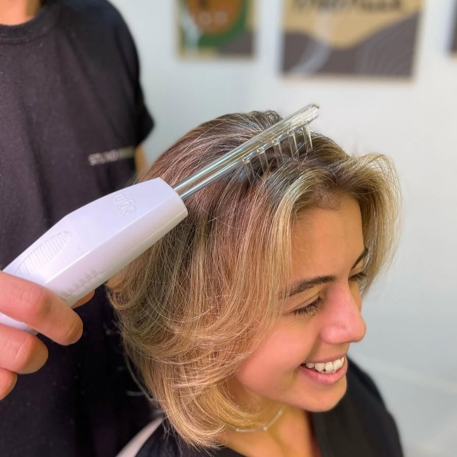

❖ Existem dentro da metodologia da terapia capilar diversos métodos e formas diferentes de tratamento. Com equipamentos, fitocênticos, diferentes técnicas de massagem, aplicações intradermais e outros.
❖ Cada disfunção apresenta diferentes necessidades de tratamento, assim sendo necessária a personalização de acordo com cada sinal observado em avaliação pelo profissional terapeuta maximizando os resultados do protocolo.

| TRATAMENTOS PARA CADA DISFUNÇÃO | ||
|---|---|---|
| Disfunção | Tratamento | |
| Dermatite | Anti-inflamatório | |
| Seborréia | Fungicida e bactericida | |
| Alopecia | Estimulante | |
| Psoríase | Hidratante | |
| Caspa | Fungicida e bactericida | |